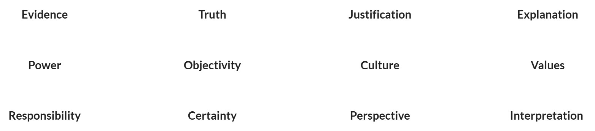

Subject teachers can incorporate TOK into their subjects by helping students explore their subject through conceptual lenses.
Session Objectives:
The following 12 concepts play an important role throughout the TOK course. You may already have some understanding of these concepts, through our discussions in TOK you will deepen your understanding of these concepts and learn about their role in knowledge creation.
Concepts form building blocks out of which knowledge is constructed. Every discipline and area of knowledge have concepts which work as foundations in them. The 12 concepts mentioned above are relevant and important for knowledge in general. They may also be important in specific areas of knowledge.
One of the requirements of knowledge questions is that the questions must draw upon TOK Concepts. The concept could be explicitly used in the knowledge questions:
Or these concepts could be present implicitly in the knowledge questions. E.g.
The concept of ‘certainty’ is implicitly present in this question.
Focusing on these concepts would ensure that students are keeping their focus on knowledge and not on the subject-specific content. Although these concepts can be discussed individually, when they are discussed in relation to each other, the students are more likely to get an in-depth understanding of the processes involved with knowledge.
Teaching for conceptual understanding is a powerful teaching strategy that can help students to build the capacity to engage with complex ideas. There is also a strong link between concepts and moving students to higher-order thinking; for example, developing conceptual understanding helps students to move from concrete thinking to abstract thinking.
One way in which these 12 concepts can be threaded throughout the TOK course is by using them explicitly within the wording of knowledge questions. For example, the concept of evidence could be explored through knowledge questions such as:
Other useful strategies include:
(Theory of Knowledge - Teacher Support Material - 2020)
Click the following link to view the Drive document:
Open Drive DocumentClick the following link to view the document:
PadletClick the following link to view the Drive document:
Open Drive DocumentClick the following link to view the Drive document:
Open Drive Document